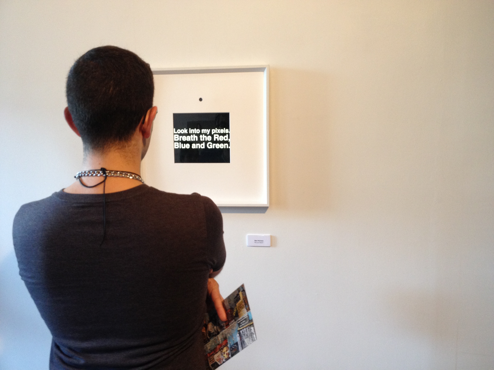

Make art happen with browser eyes and ears.
What I do

What I do Contd.
What I do Contd. Contd.

Meet my dad.

Meet my dad Contd.
Son, you will grow up to be an engineer.
- dad.
I, on the other hand

Fast-forward to 2013
Not a fan of "title"s
- Titles are arbitrary
- Tools are tools and you make what you want with them.
- Artists are specially good at appropriating tools and their contemporary technology for creative expression.
Proof? Old school awesome nerd artists.

Une Esthétique Programmée.
Not super popular 46 years ago.
Nerd art acceptance has come a long way.

And then this man happened to me.

...and to many many others.
Artist creates a space for encounter and inquiry

And digital artist mediates this encounter through zeros and ones.

Teh/YC - reliving recurring dreams I

Teh/YC - reliving recurring dreams II
Teh/YC - reliving recurring dreams III

C++ is awesome, but
What if:
- We didn't have to compile
- The artwork was portable
Enter:
- WebRTC
- Canvas
- JS
- Ghetto Computer Vision (more on this soon.)
Being web based should not dictate the mode of interaction:
Making it site-specific.
The Night
The Night Contd.
The Night: Under the hood
- A particle system
// Particle constructor
var Particle = function(args) {
this.x = Math.random() * W;
this.y = Math.random() * H;
this.vx = -1 + Math.random() * 2;
this.vy = -1 + Math.random() * 2;
this.radius = args.radius;
};
The Night: Under the hood
- A particle distance checker
function distance(p1, p2) {
var dx = p1.x - p2.x,
dy = p1.y - p2.y;
dist = Math.sqrt(dx * dx + dy * dy);
if (dist <= args.minDist) {
canvasCtx.beginPath();
canvasCtx.strokeStyle = args.setColor();
canvasCtx.lineWidth = args.lineWidth;
canvasCtx.moveTo(p1.x, p1.y);
canvasCtx.lineTo(p2.x, p2.y);
canvasCtx.stroke();
canvasCtx.closePath();
var ax = dx / (args.minDist * 1000),
ay = dy / (args.minDist * 1000);
p1.vx -= (args.minDist / Math.pow(100,.5)) * ax;
p1.vy -= (args.minDist / Math.pow(100,.5)) * ay;
p2.vx += (args.minDist / Math.pow(100,.5)) * ax;
p2.vy += (args.minDist / Math.pow(100,.5)) * ay;
}
};
The Night: Under the hood
- Quick diff-image utils for video input
function fastAbs(value) {
return (value ^ (value >> 31)) - (value >> 31);
};
function threshold(value) {
return (value > 0x15) ? 0xFF : 0;
};
function differenceAccuracy(target, data1, data2) {
if (data1.length != data2.length) return null;
var i = 0;
while (i < (data1.length * 0.25)) {
var average1 = (data1[4*i] + data1[4*i+1] + data1[4*i+2]) / 2.5;
var average2 = (data2[4*i] + data2[4*i+1] + data2[4*i+2]) / 2.5;
var diff = threshold(fastAbs(average1 - average2));
target[4*i] = diff;
target[4*i+1] = diff;
target[4*i+2] = diff;
target[4*i+3] = 0xFF;
++i;
}
};
The Night: Under the hood
- Blending two frames and get the diff
function blend() {
var width = DOM.normalImage.width,
height = DOM.normalImage.height,
sourceData = normalImageCtx.getImageData(0, 0, width, height);
if (!lastImageData) lastImageData = normalImageCtx.getImageData(0, 0, width, height);
var blendedData = normalImageCtx.createImageData(width, height);
differenceAccuracy(blendedData.data, sourceData.data, lastImageData.data);
diffImageCtx.putImageData(blendedData, 0, 0);
lastImageData = sourceData;
};
The Night: Under the hood
- Check screen area and figure out where the motion is.
function checkAreas() {
for (var r=1; r<6; ++r) {
var blendedData = diffImageCtx.getImageData(1/7*r*webcam.width, 1/8*3*webcam.height, webcam.width/8, 1/7*webcam.height);
var i = 0;
var average = 0;
while (i < (blendedData.data.length * 0.25)) {
average += (blendedData.data[i*4] + blendedData.data[i*4+1] + blendedData.data[i*4+2]) / 3;
++i;
}
average = Math.round(average / (blendedData.data.length * 0.25));
if (average > 10) {
switch(r) {
case 1:
shab.isHit = true;
break;
case 2:
zibast.isHit = true;
break;
case 3:
bihodeh.isHit = true;
break;
case 4:
ke.isHit = true;
break;
case 5:
agar.isHit = true;
break;
}
} else {
switch(r) {
case 1:
shab.isHit = false;
break;
case 2:
zibast.isHit = false;
break;
case 3:
bihodeh.isHit = false;
break;
case 4:
ke.isHit = false;
break;
case 5:
agar.isHit = false;
break;
}
}
}
The Night: Under the hood
- Draw!
function draw() {
clear();
for (var i = particles.length - 1; i >= 0; i --) {
particles[i].draw();
//canvasCtx.drawImage(images.agar, particles[0].x, particles[0].y, 25, 21);
//canvasCtx.drawImage(images.ke, particles[1].x, particles[1].y, 39, 29);
//canvasCtx.drawImage(images.bihodeh, particles[2].x, particles[2].y, 64, 41);
//canvasCtx.drawImage(images.shab, particles[4].x, particles[4].y, 61, 35);
};
update();
/* hack: drawing words in html for exhibition shhhhhhh! */
//canvasCtx.drawImage(images.agar, 1/7*5*DOM.canvas.width, 1/8*3*DOM.canvas.height, 51, 43);
//canvasCtx.drawImage(images.ke, 1/7*4*DOM.canvas.width, 1/8*3*DOM.canvas.height, 40, 29);
//canvasCtx.drawImage(images.bihodeh, 1/7*3*DOM.canvas.width, 1/8*3*DOM.canvas.height, 97, 38);
//canvasCtx.drawImage(images.zibast, 1/7*2*DOM.canvas.width, 1/8*3*DOM.canvas.height, 103, 41);
//canvasCtx.drawImage(images.shab, 1/7*1*DOM.canvas.width, 1/8*3*DOM.canvas.height, 64, 41);
}
AreYouThere?
Are works of art lifeless objects?
AreYouThere?
Are works of art lifeless objects?